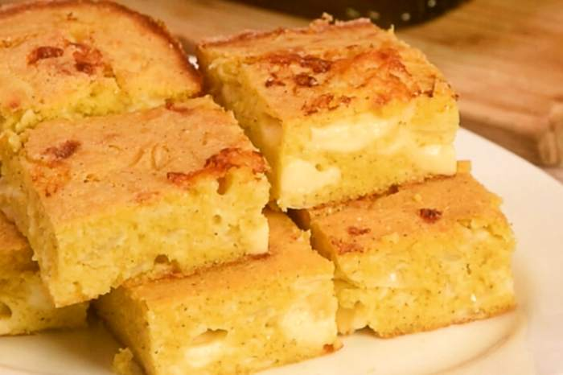

Sopa Paraguaya

Description
The Sopa Paraguaya is soup, but a solid soup, not a liquid one.
It is the perfect company for your meals, specially with any kind of meat.
Ingredients
- 300 grs. of yellow corn flour
- 500 ml. of milk
- 3 finely chopped onions
- 300 grs. of fresh Paraguayan Cheese
- 4 eggs
- 2 sp of oil
- 1 pinch of salt
- 1 pinch of Pepper
- 1 garlic
Preparation
- In a frying pan, place a little oil and sauté the onions for a few minutes until transparent. Set aside.
- In a bowl place the corn flour, onions, salt and pepper to taste. Gradually add the milk and mix well. Stir in the crumbled cream cheese and mix.
- In another bowl, beat the eggs until frothy. Incorporate them into the flour mixture with the help of a spatula, through encircling movements.
- Pour the mixture into a baking dish and bake for 35 to 40 minutes until the surface of the cake is golden brown. Check the center with a toothpick, it should come out clean.
- Wait for it to cool and cut into squares.
- Serve and enjoy.